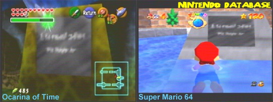

Everyone knows about 1996’s revolutionary Super Mario 64. While other more talented people have analyzed the mechanical aspects, fewer have covered its manual and the little details within. Nintendo hosts a PDF of the manual on the UK website here, and it is not a perfect recreation as we'll cover. All other scans are from my physical manual. Click to make images ginormous. Now let's began!

And the answer is yes and yes. Here we have a summary of what Mario experiences after receiving Peach’s invitation. I like how we keep up with him all the way to Bob-omb Battle Field, both exposition and a soft tutorial. Bowser took the Power Stars and will convert the residents of the painting worlds into monsters that will eventually overflow from the paintings. Really then, there is no explanation on why the stars didn't do their job or why Peach has a magical art gallery in the 'Mushroom Castle' later to be known as Peach's Castle, and not beds, tables, or toilets. Mario has commentary on the adventure, and you can find similar in other instruction books, like Super Mario World’s.
Controls are gone over thoroughly, justified with the new exciting control stick and what not. “Other ways to fly” is only in the original and not the PDF version. It mentions misleadingly that Mario can 'fly' by stomping on special enemies, or being carried by the wind. In reality Mario spinning off of Spindrifts and/or plunging into the wind on courses like Tall Tall Mountain aren’t exactly the same as flying with the Wing Cap. I can't say that explains the omission though.

|

|
|---|
“How to play the game” is another altered section. The original has a stylized image of the castle’s layout, apparently taken from an early castle layout diagram. In the PDF this is replaced with an overly zoomed out overhead view from in game, that doesn't help in any way. Note that the unaltered text tells you to “see the sketch of the castle’s structure”. Someone skipped a proof read. Notice the PDF graphic design being simpler, probably to work better in black and white.

The "Items" section is only in the original manual. It covers the coins, spinning hearts, 1-ups, Koopa Shells, and more. The page about the colored blocks and caps are in both however, explaining how they work. Why skip the items? Not sure. A misconception for some is that the Metal Cap is bugged because you can take fall damage. Verbatim, Mario is immune to enemy hits, drowning, gases, and flames, not 'invincible'.

The Camera operations is reduced a lot in the PDF, only explaining the c-buttons and not the modes to change from the pause street. Exclusive to the the original is the “Tips and other details”. We learn how about the collectables more and how to navigate the game, along with mechanical hacks like ground pounding to reduce damage. Yes, as illogical as it sounds, that last one is an intended mechanic. Why the PDF slims so much is unknown to me. The Virtual Console manuals were heavily edited (and I don't agree with that either. It's digital so there's nothing to lose by properly reproducing it), but as far as I know, this PDF is for a physical copy. Now let's have (more) fun!
Fact #1: Peach canonically has poles in the castle.
According to Super Mario 3D All-Stars: "Princess Peach has invited Mario to her castle to enjoy some cake! On his arrival, he's greeted by an eerie silence...until Bowser's laughter echoes through the halls. Thus begins an adventure to rescue the princess by exploring the magical worlds within the castle's many enchanted paintings. This first 3D action game in the Super Mario series launched alongside the Nintendo 64 system. The introduction of the analog Control Stick set a new standard for later games in the series."
Per Nintendo's modern day description, it's common knowledge that you jump into paintings to enter levels. Just how many levels are actually contained in paintings though? A PAINTING (not a wall or portal anything else):
Hmm, that's ten nine of fifteen and that's not counting the Bowser or sublevels. What gives? Dire Dire Docks is considered a painting from some but I'm not so sure. It's more of a portal in my opinion, the same as Hazy Maze Cave. Snowman's Land has a asterisk because its painting is invisible, but the mirror reveals it's there so I count it as existing even if it's a repeat of Cool Cool Mountain. Maybe that's why it's invisible? Peach realized she ordered the same one twice? What of everything else?:
So only slightly more than half of this game is jumping in paintings, even less if we don't count Dire Dire Docks and Snowman's Land. Now you know!
It's just a tiny bit of world building sneaking in. In normal circumstances we can presume Peach's personal spaces are on these higher floors. (Ignore that we can't find them.) Logically don't go stomping or being loud in her halls. The DS remake rewords this message, but either way it's not deeper than that.
We all wish. This is a cooler and even more widely propagated urban legend, but Luigi isn't hidden in the game and that isn't even what's supposed to be inscribed on the fountain (Pareidolia). To tease, Super Mario Odyssey they put a moon there. Wait, don't go! There's more.
The texture asset, of which Super Mario 64 borrowed many from various sources in some sort of pixelated, squashed, or stretched form is in Zelda too! You can find other similarities if you look.

Collect all the stars and Yoshi materializes on the roof to give you a cameo and slightly broken message. With Virtual Console rereleases (but not 3D All-Stars- oops) fixing it I am sure it was never intended, but Yoshi speaks like this in a few other games and it wasn't that out of character. Of note here is that the last adventure he refers to is Super Mario World. Basically any games in between then and SM64 weren't canon. Who told Yoshi to wait there as opposed to the front door and why? The Lakitu Bros playing a prank? They wanted to give Mario and excuse to use the canon? Both?

-And stuck in purgatory, rolling in a pit at the bottom of the mountain.. I think some people took the pun too seriously. Does this imply that the other Big Steelies (which are a separate enemy) were once sentient bob-omb people? That flies in some fandom spaces, and is maybe even adopted in some hacks, but it's called a headcanon for a reason. Going back to the manual study above, Bob-omb Battlefield is part of the intro and the Bob-omb Buddy's dialogue is telling you to keep fighting on. So why add a third ball? Maybe for Koopa the Quick's race? Levels oven make small changes based on the star mission. The DS remake strips some difficulty and that third ball is one of them, always having only two Big Steelies. In conclusion this is a more modern myth that I respect for using 'proof' within the game, but ultimately just that.